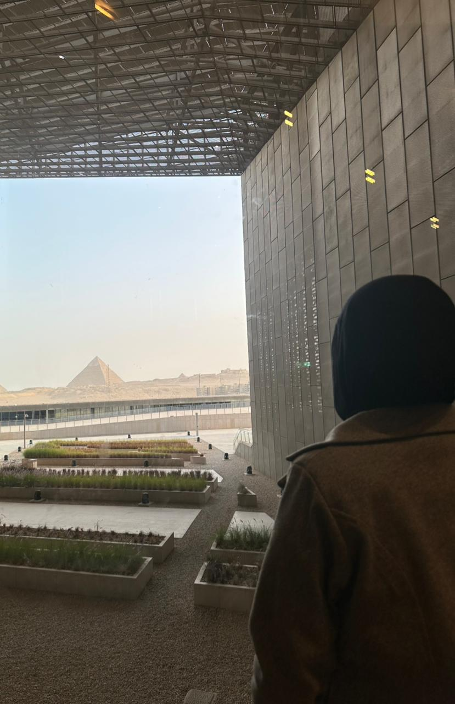

The Grand Egyptian Museum is the largest archaeological museum in the world
It shows the anceint egyptian civilisation
Features a modern triangular design inspired by the shape of the pyramids

Includes over 5000 artifacts like the golden funerary mask, jewelry and personal belonging

The ticket isjust L.E 100 for Egyptian students
For foreigners students its L.E750

You will enjoy and have a wonderful photos. For more info Click here.